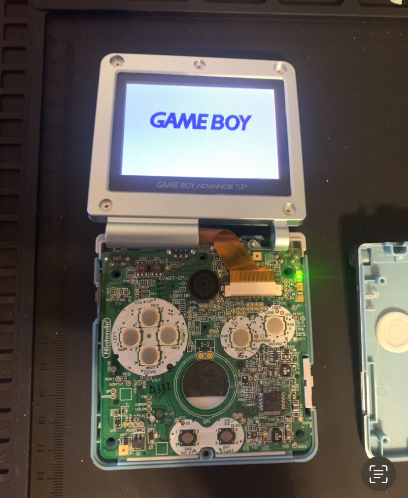
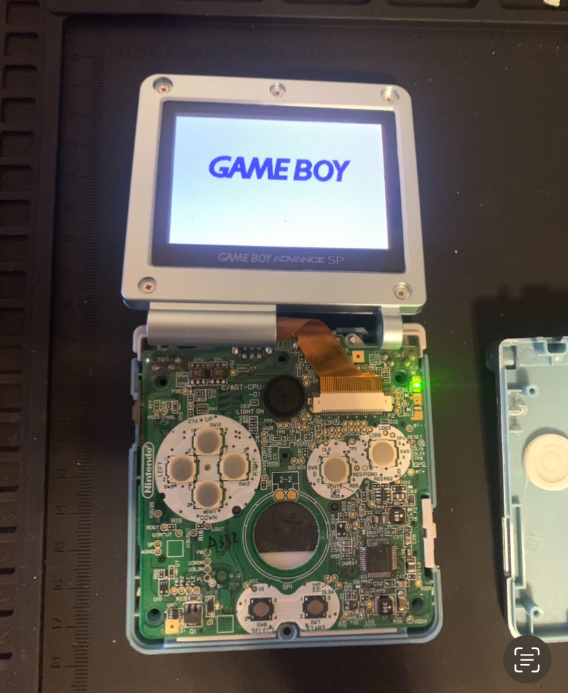
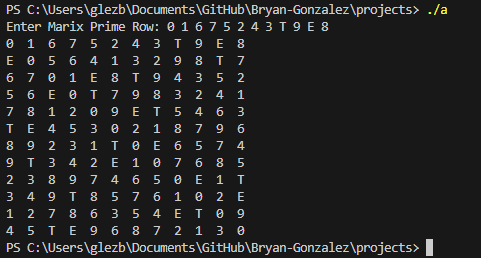

My Projects
Personal Portfolio Website
Current Project
Description
I am currently in the process of developing my personal portfolio website, which aims to showcase my projects and provide insights into my background as a computer engineering major. The project is nearing completion, with most sections already implemented. However, there are a few remaining tasks on my agenda.
Firstly, I need to populate the home page with relevant content that effectively introduces visitors to my work and expertise. Additionally, I plan to enhance the visual appeal of the website by updating the CSS to incorporate vibrant color accents, creating a more engaging user experience.
Furthermore, I intend to make improvements to the "Jump to" menu, ensuring seamless accessibility and functionality across different screen sizes.
Overall, my ongoing efforts are geared towards crafting a polished and user-friendly platform that effectively highlights my skills and accomplishments within the field of computer engineering.
Game Boy Advance Repair
January 26, 2024
A while ago I found a Game Boy Advance (GBA) in a poor condition. I grew up loving the GBA so I figured it would be fun side project to repair and refurbish it.
Initial GBA damage:
- Will not stay on for longer than a second.
- Screen would not turn on.
- heavy damage to shell
.jpg)
.jpg)
.jpg)
.jpg)
Ordered a new battery and shell.
GBA will now stay on but still no display
I took the GBA out of it's shell.
The ribbon cable that connects to the screen was loose so reattaching it fixed the issue. All that is left is to put the GBA into its new shell.
 

Finished!
- Game slot funtions.
- All buttons tested.
- Charging and link port tested.
- Sound and volume setting tested.
- Everything is in order.
X|O|X Tic tac toe O|X|O
December 23, 2023
Language
JavaScript
Description
This game is a basic implementation of the classic Tic Tac Toe game written in JavaScript. Created after completing an introductory course in JavaScript, this was the first project JavaScript Project I did just for fun. Players face off against a computer opponent that randomly selects a box, making it relatively easy to win.
The game includes a score counter that tracks wins, losses, and ties, storing the data in local storage for persistent tracking across sessions. While the current version offers a simple gameplay experience, I plan to refine the code using better JavaScript practices and enhance the computer opponent's difficulty level. Future updates may also introduce a two-player mode for interactive gameplay between users.rs a chance to engage in a timeless game of strategy and skill.
On The Tip Of My Tongue
November 28, 2023
Language
Java
Description
For my Object-Oriented Programming final project, I created an engaging and interactive game inspired by Wordle, incorporating different difficulty levels to enhance the player experience. The project was undertaken with minimal instructions, providing the freedom to explore creative solutions and apply various programming concepts.
Key Features
1. Gameplay Mechanics
- The game is structured with three difficulty levels – Easy, Medium, and Hard.
- Each difficulty level corresponds to a specific word length (5, 6, and 7 letters, respectively).
- Players are given a set number of guesses based on the difficulty level, adding a strategic element to the gameplay.
2. Graphical User Interface (GUI)
- The project utilizes the Swing library to create a user-friendly GUI.
- The GUI enhances the gaming experience by providing a visually appealing and intuitive interface.
3. File Handling
- A key aspect of the project involved working with text files to read word libraries for each difficulty level.
- This allowed for a dynamic and easily updatable system for word choices, adding an element of variety to the gameplay.
4. JPanel with Card Layout
- One of the standout features of the project is the implementation of a JPanel with a Card Layout.
- This layout efficiently manages multiple panels, facilitating seamless transitions between different menus within the game.
Challenges and Learnings
While the project was a success overall, it was not without its challenges. The choice of word libraries posed a significant challenge, with the 6-letter word list being too extensive and including obscure words, while the 7-letter word list was too limited, resulting in some common words being excluded.
Conclusion
The Wordle Challenge Game is a testament to the creativity and problem-solving skills applied in an object-oriented programming context. The use of GUI, file handling, and innovative layout management contribute to a polished and enjoyable gaming experience. The project showcases the ability to overcome challenges and highlights areas for potential improvements in future iterations.
Grade: 18/18
Music Matrix
2019
Language
C
Description
As a former music major delving into post-tonal theory, I developed a simple yet effective terminal-based program for analyzing 12-tone music using matrices. Inspired by the principles of post-tonal theory and matrix analysis, this program provides a straightforward tool for music theorists and composers interested in exploring this avant-garde style.
Key Features
1. Matrix Generation
The program takes a 12-tone series (the prime row) as input.
2. Matrix Display
It constructs and prints out the full matrix for analysis.
3. Chromatic Representation
Pitch values are represented in ascending chromatic order, starting from 'C' as 0 and incrementing by semitones. To maintain single-digit representations, 'T' stands for 10 (representing B♭/A#) and 'E' represents 11 (representing B natural).
Usage Example

The program generates and displays the corresponding matrix for analysis.
Learn More
For those interested in learning more about matrices in post-tonal music theory further, consider reading about it on https://musictheory.pugetsound.edu/mt21c/section-194.html.